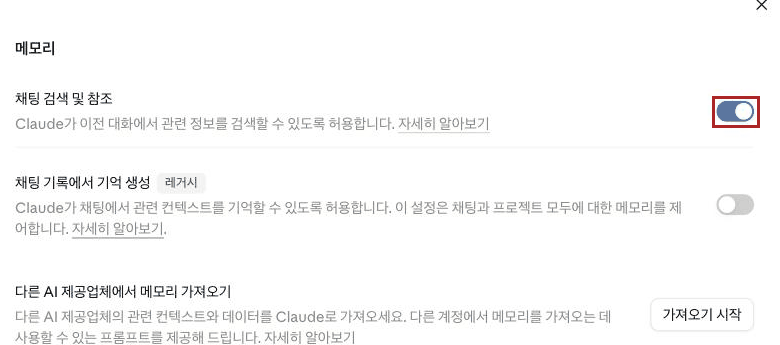

Claude · 중급 · 모듈 05
모듈 01~04가 내가 미리 넣어 두는 맥락이었다면, 이번엔 Claude가 스스로 쌓는 맥락입니다. 무엇이 담겼는지 확인하고, 담기면 안 되는 것을 분리하는 방법을 다룹니다.
이 모듈을 마치면 다음을 할 수 있습니다.
| 항목 | 내용 |
|---|---|
| 필요 플랜 | Pro 또는 Max. |
| 사전 지식 | 중급 04 수료. 초급 02에서 익힌 익명 채팅(2026-08-26 현재 화면 표기는 "시크릿 채팅"으로 바뀌었습니다 — 4-5)을 이 모듈에서 목적을 갖고 씁니다. |
| 준비물 | 이 계정으로 이전에 나눈 대화가 몇 개 있어야 합니다. 이 커리큘럼을 따라왔다면 충분합니다. |
| 예상 사용량 | 프롬프트 5회. 짧은 대화라 사용량이 적습니다. |
| 이 문서에서 부르는 이름 | 확인 상태 |
|---|---|
| "설정" | 확인됨 — 왼쪽 아래 이니셜 클릭 시 나오는 메뉴에 실제로 있음 (직접 확인, 2026-08-26) |
| 유령 아이콘 / "시크릿 채팅" 2026-08-20판에서는 "익명 채팅"으로 썼습니다. 화면 표기가 바뀌었습니다 — 4-5 참고 | 확인됨. 실제 화면 문구는 "시크릿 채팅"/"시크릿 모드입니다" (직접 확인, 2026-08-26). 단 지원 센터 문서는 이 글 기준 아직 "익명 채팅"으로 표기 (출처: support.claude.com/ko/articles/12260368, 2026-08-26 확인) |
| 메모리 설정 화면 계정마다 위치가 다릅니다 — 아래 참고 | 확인됨. Free·Pro·Max(신규 환경): 왼쪽 설정 메뉴에 "메모리" 항목이 따로 있음. Team·Enterprise(레거시 환경, 이 계정 포함): "설정" → "기능" 안의 "메모리" 구획. (레거시 화면 직접 확인 2026-08-26; 신규 화면은 출처: support.claude.com/ko/articles/11817273, 2026-08-26 확인) |
| 이전 채팅 검색 토글 | 확인됨 — 실제 한국어 라벨은 "채팅 검색 및 참조" (직접 확인, 2026-08-26) |
인터넷에는 "메모리가 하루 한 번 요약으로 갱신되므로 오늘 말한 것은 내일부터 반영된다"는 설명이 많습니다. 이것은 레거시 환경(4-1)의 실제 동작입니다 — Team·Enterprise 계정은 지금도 24시간마다 갱신되는 대화 요약 방식을 씁니다. 반면 신규 환경(Free·Pro·Max, 마이그레이션 완료)은 Claude가 대화 중에 실시간으로 읽고 쓰는 개별 분류 항목들의 집합으로 바뀌었습니다. (출처: support.claude.com/ko/articles/11817273, 2026-08-26 확인)
즉 "낡은 설명"인지 아닌지는 내 계정이 어느 환경인지에 달려 있습니다. 실습 5단계에서 내 계정에서 실제로 언제 반영되는지 직접 확인합니다 — 신규 환경이면 같은 세션에서 바로, 레거시 환경이면 최대 24시간 뒤일 수 있습니다.
메모리는 내가 안 넣어도 쌓입니다. 그래서 중급의 다른 기능과 관리 방식이 반대입니다. 계정 지침·스킬·프로젝트는 무엇을 넣을지가 문제였지만, 메모리는 무엇이 이미 들어갔는지 확인하고 빼는 것이 일입니다.
Anthropic은 메모리 기능을 점진적으로 새 환경으로 옮기는 중입니다. Free·Pro·Max 플랜은 이미 신규 환경으로 전환됐고, Team·Enterprise 플랜은 당분간 레거시 환경에 남아 있습니다(관리자에게 추후 별도 안내 예정). 이 모듈의 화면·동작 설명은 두 환경을 구분해서 씁니다. (출처: support.claude.com/ko/articles/11817273, 2026-08-26 확인)
| 신규 환경 | 레거시 환경 | |
|---|---|---|
| 대상 | Free · Pro · Max | Team · Enterprise (현재 이 문서의 캡처 계정 포함) |
| 설정 위치 | "설정" → "메모리" (독립 메뉴) | "설정" → "기능" 안의 "메모리" 구획 |
| 갱신 방식 | 대화 중 실시간, 개별 항목 단위 | 24시간마다 대화 전체를 요약·종합 |
| 보고 고치는 방법 | 설정 화면에 목록이 바로 표시됨 | "메모리 보기 및 편집" 버튼 → 모달 창 |
확인 방법: 설정 메뉴에 "메모리"가 독립 항목으로 보이면 신규, "기능" 탭 안에 있으면 레거시입니다(1단계).
| 메모리 | 이전 채팅 검색 | |
|---|---|---|
| 하는 일 | 이전 대화의 맥락을 기억해 이어 줌 | 이전 대화를 찾아서 참조 |
| 요금제 | 전 플랜 (무료 포함) | 유료 전용 (Pro·Max·Team·Enterprise) |
| 동작 방식 | 신규 환경: 실시간 개별 항목 레거시 환경: 24시간마다 요약 종합 (4-1) | RAG로 검색하며 도구 호출로 표시됨. 실제 화면 라벨은 "Relevant chats"(영문) (직접 확인, 2026-08-26) |
| 내가 할 일 | 무엇이 담겼는지 확인·정리 | 자연어로 물어보기 |
이전 채팅 검색은 유료 플랜의 웹·Claude Desktop·Claude Mobile에서 제공되며, 계정에 배포되면 기본으로 켜져 있습니다. 검색이 일어나면 현재 대화에 도구 호출로 표시되므로 언제 검색했는지 눈으로 알 수 있습니다. (출처: support.claude.com/ko/articles/11817273, 2026-08-26 확인)
| 범위 | 내용 |
|---|---|
| 프로젝트 밖의 모든 대화 | 하나의 범위로 검색됨 |
| 개별 프로젝트 대화 | 각 프로젝트 안으로 검색이 한정됨 |
즉 프로젝트 A의 대화를 프로젝트 B에서 찾을 수 없습니다. 메모리도 마찬가지로 프로젝트마다 별도로 유지되며 프로젝트 밖 대화와 섞이지 않습니다. 모듈 03에서 "프로젝트 안이라도 대화끼리 맥락이 공유되지 않는다"고 했던 것과 함께 기억하세요. (출처: support.claude.com/ko/articles/11817273, 2026-08-26 확인; 및 en/articles/9519177, 2026-08-20 확인·재확인 안 됨)
Claude는 협업에 도움이 되는 업무 관련 맥락에 집중합니다 — 역할, 진행 중인 프로젝트, 전문 분야 같은 것들입니다. 이 내용은 메모리나 프로젝트 요약에 반영되어 내가 직접 볼 수 있습니다. (출처: support.claude.com/ko/articles/11817273, 2026-08-26 확인)
Anthropic 공식 발표는 이렇게 밝힙니다 — 설정에서 Claude가 대화로부터 무엇을 기억하는지 정확히 볼 수 있고, Claude와 대화하며 언제든 갱신할 수 있습니다. 무엇에 집중하거나 무시하라고 말하는지에 따라 Claude가 참조하는 기억을 조정합니다. (출처: anthropic.com/news/memory, 2026-08-20 확인)
실습 2·6단계가 이 두 가지를 각각 다룹니다.
대화를 지우면 메모리도 자동으로 지워지는지는 환경마다 다릅니다. 레거시 환경은 대화를 삭제하면 그 요약도 함께 제거되지만, 신규 환경은 원본 대화를 지워도 이미 만들어진 메모리 항목이 자동으로 사라지지 않습니다 — 지우려면 메모리 화면에서 그 항목을 따로 삭제해야 합니다. 즉 신규 환경에서는 메모리가 대화 기록과 분리된 채로 남을 수 있는 저장소입니다. (출처: support.claude.com/ko/articles/11817273, 2026-08-26 확인)
초급 02는 이 기능을 "익명 채팅"으로 소개합니다. 그런데 2026-08-26 기준 실제 화면에는 "시크릿 채팅"(유령 아이콘 클릭 시 "🌟 시크릿 모드입니다")으로 표시됩니다 — 지원 센터 문서는 아직 옛 이름을 쓰고 있어 자료마다 표기가 다를 수 있습니다. 같은 기능이니 초급 02에서 "익명 채팅"이라는 이름을 봤다면 이 모듈의 "시크릿 채팅"과 같은 것으로 이해하세요. (직접 확인, 2026-08-26; 지원 문서는 출처: support.claude.com/ko/articles/12260368, 2026-08-26 확인)
여기서는 이 기능을 목적을 갖고 씁니다. 프로젝트 밖에서 새 대화를 시작하면 화면 오른쪽 위에 유령 아이콘이 보이고, 클릭하면 시크릿 채팅이 켜집니다. 이 모드에서는 대화가 기억되지 않아 메모리에도 대화 기록에도 저장되지 않고, 나중에 이전 대화를 검색할 때도 시크릿 채팅에서는 정보를 가져오지 않습니다. 화면에도 "채팅 기록은 여전히 관리자에게 표시됩니다"라는 안내가 함께 뜹니다. (직접 확인 및 출처: support.claude.com/ko/articles/11817273, 2026-08-26 확인)
공식 문서가 분명히 합니다 — Team·Enterprise 플랜 계정을 쓰는 경우 시크릿 채팅도 표준 데이터 내보내기에 포함되며, 기본값으로 최소 30일(또는 조직이 정한 더 긴 기간) 보관됩니다. (출처: support.claude.com/ko/articles/12260368 및 11817273, 2026-08-26 확인)
즉 시크릿 채팅은 Claude가 기억하지 않게 하는 기능이지 기록이 남지 않게 하는 기능이 아닙니다. 사내 계정에서 "시크릿이니까 괜찮다"고 판단하면 안 됩니다. 애초에 넣지 말아야 할 정보는 시크릿 채팅에도 넣지 마세요.
| 모듈 | 맥락을 넣는 주체 | 관리 방식 |
|---|---|---|
| 01 계정 지침 | 나 | 무엇을 넣을지 고름 |
| 02 스킬 | 나 | 무엇을 넣을지 고름 |
| 03 프로젝트 | 나 | 무엇을 넣을지 고름 |
| 04 커넥터 | 나 (연결만) | 무엇을 허용할지 고름 |
| 05 메모리 | Claude | 무엇이 들어갔는지 확인하고 뺌 |
만들 결과물: 메모리 동작을 전·후로 확인한 기록과, 정리된 메모리 내용.
왼쪽 아래 이니셜 → "설정"을 클릭합니다. 다음 메모리가 어디 있는지가 계정마다 다릅니다(4-1) — 왼쪽 메뉴에 "메모리"가 독립 항목으로 보이면 신규 환경이니 그곳을 클릭하고, 안 보이면 "기능"을 클릭해 레거시 환경의 "메모리" 구획을 찾습니다. 어느 쪽이든 두 가지가 따로 있어야 합니다(4-2) — 메모리 생성과 이전 채팅 검색·참조.
이 캡처로 3-2 표를 확정했습니다. 신규 환경 화면은 이 계정(Team 플랜, 레거시 환경)에서는 재현할 수 없어 공식 문서 설명으로 대신합니다(4-1 표).

기능 화면의 메모리 구획. '채팅 검색 및 참조' 토글이 켜져 있고 빨간 테두리로 강조되어 있으며, '채팅 기록에서 기억 생성' 토글에는 레거시 표시가 붙어 있고 꺼져 있다. 그 아래 '다른 AI 제공업체에서 메모리 가져오기' 기능도 보인다.">신규 환경은 설정 화면에 목록이 바로 보입니다. 레거시 환경은 "메모리 보기 및 편집" 버튼을 눌러야 모달 창으로 열립니다(4-1). Claude가 기억하고 있는 내용을 직접 봅니다(4-4). 내용을 메모장에 복사해 두세요. 6단계에서 비교합니다.
내가 넣은 적 없는 내용이 있을 수 있습니다. 그게 이 모듈을 하는 이유입니다. 사내 정보나 개인 정보가 담겨 있다면 6단계에서 빼세요.
반대로 목록이 비어 있거나 "메모리 보기 및 편집" 버튼 자체가 안 보일 수도 있습니다. 그러면 1단계의 메모리 생성 토글이 꺼져 있는 것입니다 — 이 경우 토글을 켜고, 새 대화를 몇 차례 나눈 뒤 다시 확인하세요(레거시는 최대 24시간, 신규는 실시간 반영, 3-3).
여기에 Claude가 기억한 내용 한 줄 요약이 표시됩니다.
여기에 Claude가 기억한 내용 한 줄 요약이 표시됩니다.
여기에 Claude가 기억한 내용 한 줄 요약이 표시됩니다.
[C-02] Claude가 무엇을 기억하는지 직접 볼 수 있다 — 확인은 사용자의 몫이다(항목 내용은 실제 데이터가 아닌 예시 라벨입니다).
실제 화면과 다를 수 있는 근사 목업입니다. 2026-08-26 확인 시 이 계정(Team 플랜, 레거시 환경)은 "채팅 기록에서 기억 생성" 토글이 꺼져 있어 표시할 실제 항목이 없었습니다. 토글을 켜는 것은 계정 설정 변경이라 계정 소유자 승인 없이 임의로 켜지 않고, 실촬영 대신 목업으로 대체했습니다. 소유자가 토글을 켜고 대화를 쌓은 뒤(레거시는 최대 24시간 대기) 이 자리를 실제 캡처로 교체하세요.
새 대화를 열고 프롬프트 A를 보냅니다. 응답을 메모장에 복사해 두세요. 5단계에서 같은 질문을 다시 합니다.
같은 대화에서 프롬프트 B를 보냅니다. 업무 방식에 관한 것만 넣습니다 — 사내 정보나 개인 정보는 넣지 마세요(모듈 01의 4-5와 같은 원칙).
새 대화를 열고 3단계와 완전히 동일한 프롬프트 A를 다시 보냅니다.
신규 환경이면 지금 바로 반영돼야 정상입니다(실시간 개별 항목 갱신). 레거시 환경이면 지금은 반영되지 않는 것이 정상일 수 있습니다 — 24시간마다 한 번 요약이 도는 방식이기 때문입니다(4-1, 3-3). 레거시 환경이라면 이 단계는 "안 됐다"로 끝내지 말고, 날짜를 메모해 뒀다가 다음 날 같은 프롬프트 A로 다시 확인하세요.
신규 환경인데 차이가 없다면 ① 새 대화가 아니었거나 ② 메모리 생성이 꺼져 있을 수 있습니다. 1단계로 돌아가 확인하세요. 레거시 환경이면 하루 뒤 확인이 정상 절차입니다.
4-4에서 본 대로 대화로 갱신할 수 있습니다. 프롬프트 C로 빼야 할 것을 빼고, 설정 화면에서 실제로 반영됐는지 확인합니다.
2단계에서 복사해 둔 내용과 비교하세요.
프롬프트 D로 예전 대화를 찾아 달라고 합니다. 검색이 도구 호출로 표시되는지 확인하세요(4-2). 화면에는 "Relevant chats"라는 영문 라벨 그대로 뜹니다 — 한국어 UI에서도 이 부분만 번역되어 있지 않습니다.
모듈 03에서 만든 프로젝트 안에서 새 대화를 열고 프롬프트 D를 다시 보냅니다.
프로젝트 밖 대화가 검색되지 않아야 정상입니다(4-3). 검색은 각 프로젝트 안으로 한정됩니다.
프로젝트 밖에서 새 대화를 시작하고 오른쪽 위 유령 아이콘을 클릭합니다. "시크릿 채팅" 표시(화면 중앙에 "시크릿 모드입니다")를 확인한 뒤 아무 대화나 나눠 봅니다.
대화를 닫고 대화 목록에 남지 않는지 확인합니다.
새 일반 대화를 열고 시크릿 채팅에서 나눈 내용을 찾아 달라고 해 봅니다. 찾지 못해야 정상입니다(4-5).
Team·Enterprise 플랜에서는 시크릿 채팅도 데이터 내보내기에 포함되고, 기본 최소 30일간 조직의 보존 정책을 따릅니다(4-5). "Claude가 기억 안 함"과 "기록이 안 남음"은 다릅니다.
마지막으로 판단을 정리합니다. 프롬프트 E로 내 업무에서 메모리에 들어가면 안 되는 것을 목록화하고, 그런 대화를 어디서 할지 정합니다.
이 목록이 Claude 중급 코스의 마지막 산출물입니다.
이것으로 Claude 중급 코스가 끝납니다. 모듈 01~05의 다섯 가지 맥락 관리 수단을 모두 다뤘습니다(4-6).
아래 "예상 출력"은 응답 예시입니다. 성공 여부는 문구가 아니라 설정 화면의 실제 내용과 전·후 응답의 차이로 판단합니다.
사전 준비물: 3단계에서는 기억시키기 전의 새 대화, 5단계에서는 기억시킨 뒤의 새 대화. 두 번 모두 같은 문장을 씁니다.
제가 어떤 일을 하고 어떤 방식으로 일하는지 알고 계신가요?
아는 만큼만 말씀해 주시고, 모르면 모른다고 답해 주세요. 추측하지 마세요.예상 출력(응답 예시): 3단계에서는 아는 것이 없거나 적다고 답하고, 5단계에서는 프롬프트 B로 알려 준 내용을 짚습니다.
성공 확인 방법: 두 응답이 서로 달라야 성공입니다.
사전 준비물: 프롬프트 A를 보낸 같은 대화, 메모리 생성이 켜진 상태.
앞으로 참고할 수 있게 기억해 주세요.
- 저는 (직무)를 담당합니다.
- 보고 대상은 대부분 해당 분야 비전문가입니다.
- 결론을 먼저 쓰고, 목록은 5개 이하로 유지하는 방식을 선호합니다.
사내 정보나 고객 정보는 기억하지 마세요. 업무 방식만 기억해 주세요.예상 출력(응답 예시): 기억했다는 취지의 답이 나옵니다.
성공 확인 방법: 설정의 메모리 화면에 해당 내용이 나타나면 성공입니다. 화면에서 확인되지 않으면 응답만으로는 확인이 아닙니다.
모듈 01의 계정 지침과 같은 원칙입니다 — 업무 방식은 넣고 업무 내용은 넣지 마세요. 메모리는 지침과 달리 내가 지우기 전까지 계속 쌓입니다.
사전 준비물: 2단계에서 메모리 내용을 확인하고 복사해 둔 상태.
지금 저에 대해 기억하고 있는 내용을 항목별로 알려 주세요.
그중에서 아래에 해당하는 것은 기억에서 빼 주세요.
- 특정 회사·고객·프로젝트의 이름
- 일회성 작업이라 앞으로 쓸 일이 없는 것
- 사실과 다르거나 낡은 것
무엇을 뺐는지 알려 주세요.예상 출력(응답 예시): 기억 항목이 나열되고, 해당하는 것을 제거했다는 답이 나옵니다.
성공 확인 방법: 설정의 메모리 화면에서 실제로 사라졌는지 확인합니다. 2단계에서 복사해 둔 내용과 비교하세요. 화면에서 확인하는 것이 유일한 검증입니다.
사전 준비물: 이전 채팅 검색이 켜진 상태의 새 대화. 이 계정으로 예전에 나눈 대화가 있어야 합니다.
예전에 저와 나눈 대화 중에서 회의록이나 안내문 작성과 관련된 내용을 찾아
무엇을 했었는지 정리해 주세요. 없으면 없다고 답해 주세요.예상 출력(응답 예시): 검색이 도구 호출로 표시된 뒤, 찾은 대화의 내용이 정리되어 나옵니다.
성공 확인 방법: 아래 2가지를 확인합니다.
두 번째가 4-3의 경계를 확인하는 지점입니다. 프로젝트 안에서는 그 프로젝트의 대화만 검색됩니다.
사전 준비물: 앞 단계를 모두 마친 상태.
제 업무에서 Claude의 메모리에 들어가면 곤란한 정보 유형을 정리해 주세요.
각 유형에 대해 아래를 적어 주세요.
1. 왜 곤란한가
2. 그런 내용을 다뤄야 할 때 어디서 대화해야 하는가
(일반 대화 / 프로젝트 / 시크릿 채팅)
3. 시크릿 채팅을 쓰더라도 남는 것은 무엇인가
3번은 Team·Enterprise 계정에서 시크릿 채팅이 데이터 내보내기에 포함되고
조직의 보존 정책(기본 최소 30일)을 따른다는 점을 반영해 주세요.예상 출력(응답 예시): 정보 유형별로 세 항목이 정리됩니다. 3번에서 "시크릿 채팅도 기록은 남을 수 있다"는 점이 반영되어야 합니다.
성공 확인 방법: 아래 2가지가 맞으면 성공입니다. 이 목록을 메모해 두고 실제 업무에 적용하세요.
| 증상 | 원인 | 해결 |
|---|---|---|
| 기억시켰는데 새 대화가 모른다 | 메모리 생성이 꺼져 있거나, 기존 대화에서 물어봄. 레거시 환경이면 최대 24시간 지연이 정상 | 설정에서 토글을 확인하고 새 대화에서 다시 확인합니다. 레거시 환경(4-1)이면 하루 뒤 다시 확인하세요. 설정 화면의 메모리 내용에 실제로 담겼는지도 보세요. |
| 이전 채팅 검색이 안 된다 | 무료 플랜이거나 토글이 꺼져 있음. Enterprise는 고객 관리 암호화 키(CMEK) 사용 시 검색 자체가 불가 | 이전 채팅 검색은 유료 전용입니다(4-2). 유료인데 안 되면 설정에서 토글을 확인하고, Enterprise면 조직이 CMEK를 쓰는지 관리자에게 확인하세요. (출처: support.claude.com/ko/articles/11817273, 2026-08-26 확인) |
| 다른 프로젝트의 대화를 못 찾는다 | 정상 동작 (4-3) | 검색은 각 프로젝트 안으로 한정됩니다. 프로젝트 밖 대화는 프로젝트 밖에서 검색하세요. |
| 메모리에서 뺐는데 다시 나타난다 | 같은 내용을 다시 말해서 재학습됨 | 기억되면 안 되는 정보는 애초에 말하지 않는 것이 유일한 방법입니다. 필요하면 시크릿 채팅에서 다루되 4-5의 한계를 기억하세요. |
| 대화를 지웠는데 메모리에는 남아 있다 | 신규 환경에서는 정상 동작 | 신규 환경은 원본 대화를 지워도 메모리 항목이 자동으로 안 지워집니다(4-4). 메모리 화면에서 그 항목을 따로 삭제하세요. 레거시 환경은 대화 삭제 시 관련 요약도 함께 지워집니다. |
| 인터넷 설명과 동작이 다르다 | 메모리가 신규·레거시 두 환경으로 나뉘어 있음 | 내 계정이 어느 환경인지부터 확인하세요(4-1). 일일 요약 방식은 레거시 환경에서는 아직 유효하고, 신규 환경에서만 개별 항목 방식으로 바뀌었습니다(3-3). 낡은 자료 대신 직접 확인한 결과를 기준으로 삼으세요. |
| 습관 | 겉으로 나타나는 모습 | 대응 |
|---|---|---|
| 메모리를 한 번도 열어 보지 않는다 | 편리하게 잘 씀. 무엇이 쌓였는지 아무도 모름 | 주기적으로 설정에서 확인합니다(2단계). 확인은 사용자의 몫입니다. |
| 시크릿 채팅을 "안전한 방"으로 여긴다 | 민감한 이야기를 마음 놓고 함. Team·Enterprise 계정에서는 내보내기에 포함됨 | 시크릿 채팅은 기억을 막는 기능이지 기록을 없애는 기능이 아닙니다(4-5). |
| 업무 내용을 기억시킨다 | 매번 설명 안 해도 되어 편함. 고객명·프로젝트명이 계속 남음 | 업무 방식만 기억시킵니다. 업무 내용은 프로젝트 지식에 두세요(모듈 03). |
| 낡은 인터넷 자료를 기준으로 삼는다 | "내일 반영된다"고 알고 무작정 기다리거나, 반대로 "실시간"이라고 믿고 레거시 환경에서 안 된다며 포기함 | 제품이 자주 바뀌고 계정마다 환경도 다릅니다(4-1). 공식 문서와 직접 확인을 기준으로 삼으세요(3-3). |
이 모듈로 Claude 중급 코스가 끝납니다.
이 모듈에는 캡처 3장이 필요합니다. 2026-08-26 기준 2장(C-01, C-03)은 실제 화면으로 교체됐고, C-02는 아래 사유로 HTML/CSS 목업으로 대체했습니다.
| 번호 | 화면 | 진입 경로 | 캡처 범위 | 강조 표시 | 캡션 |
|---|---|---|---|---|---|
| C-01 | 메모리 설정 완료(레거시) | 이니셜 → "설정" → (레거시: "기능" 안의 메모리) | 두 토글이 함께 보이는 범위 | 이전 채팅 검색 토글 | 메모리와 이전 채팅 검색은 별개 설정이다. |
| C-02 | 메모리에 담긴 내용 목업 대체 | 메모리 설정에서 기억 내용 보기 | 항목 목록 | 없음 | Claude가 무엇을 기억하는지 직접 볼 수 있다. |
| C-03 | 이전 채팅 검색 도구 호출 완료 | 새 대화에서 프롬프트 D 전송 | 도구 호출 표시와 응답 | 검색 도구 호출 표시 | 검색하면 도구 호출로 표시되어 언제 검색했는지 알 수 있다. |
C-02는 실촬영 시 실제 메모리 내용이 그대로 찍힙니다. 개인 정보와 사내 정보가 담겨 있을 가능성이 높으므로, 실습 전용 계정으로 촬영하거나 반드시 가린 뒤 배포하세요. C-03처럼 검색 결과에 예전 대화 제목·업무 내용이 노출되면 블러 처리하거나 캡션으로 요약하고 원문을 그대로 옮기지 마세요.
C-02를 목업으로 대체한 이유: 2026-08-26 확인 당시 캡처 계정(Team 플랜, 레거시 환경)의 "채팅 기록에서 기억 생성" 토글이 꺼져 있어 표시할 메모리 항목이 없었습니다. 이 토글을 켜는 것은 계정 설정 변경이라 계정 소유자의 명시적 승인 없이 임의로 켜지 않고, 이 자리에는 HTML/CSS로 근사 재현한 목업을 대신 넣었습니다(실제 화면과 다를 수 있음, §7-3 참고). 계정 소유자가 토글을 켜고 실제 대화를 쌓은 뒤(레거시는 최대 24시간 대기) 이 자리를 실제 캡처로 교체하세요.
https://support.claude.com/ko/articles/11817273-claude%EC%9D%98-%EC%B1%84%ED%8C%85-%EA%B2%80%EC%83%89-%EB%B0%8F-%EB%A9%94%EB%AA%A8%EB%A6%AC%EB%A5%BC-%EC%82%AC%EC%9A%A9%ED%95%98%EC%97%AC-%EC%9D%B4%EC%A0%84-%EC%BB%A8%ED%85%8D%EC%8A%A4%ED%8A%B8%EB%A5%BC-%EA%B8%B0%EB%B0%98%EC%9C%BC%EB%A1%9C-%EA%B5%AC%EC%B6%95%ED%95%98%EA%B8%B0 2026-08-26 확인https://support.claude.com/en/articles/12138966-release-notes 2026-08-20 확인, 재확인 안 됨https://www.anthropic.com/news/memory 2026-08-20 확인, 재확인 안 됨https://support.claude.com/ko/articles/12260368 2026-08-26 확인메모리와 이전 채팅 검색이 별개 기능이며 요금제 요건이 다르다는 점, 검색이 RAG로 동작하며 도구 호출로 표시된다는 점, 검색 범위가 프로젝트 안팎으로 나뉜다는 점, 기억되는 것이 업무 관련 맥락이고 설정에서 확인·갱신할 수 있다는 점, 시크릿 채팅의 유령 아이콘과 동작, 그리고 Team·Enterprise 계정에서 시크릿 채팅도 데이터 내보내기에 포함된다는 점을 공식 지원 문서와 2026-08-26 직접 조작 테스트로 확인했습니다.
2026-08-26 재확인에서 새로 드러난 것(중요): ① 메모리는 신규 환경(Free·Pro·Max, 실시간 개별 항목)과 레거시 환경(Team·Enterprise, 24시간 요약)이 현재 공존하며, 지난 버전이 "낡은 설명"이라고 단정했던 일일 요약 방식은 레거시 환경에서는 여전히 사실입니다. ② 메모리 설정 화면 위치도 환경별로 다릅니다(설정 > 메모리 vs 설정 > 기능 > 메모리). ③ "익명 채팅"이라는 이름은 실제 화면에서 "시크릿 채팅"으로 바뀌어 있었고, 지원 센터 문서는 아직 옛 이름을 씁니다. ④ 대화를 지워도 메모리가 자동으로 지워지는지는 환경마다 다릅니다. 지난 버전이 공식 자료 미확인으로 남겼던 한국어 라벨 2건("채팅 검색 및 참조", 메모리 설정 화면 위치)은 이번에 직접 조작으로 확인해 확정했습니다(3-2). 이번에도 확인하지 못한 것은 신규 환경(Free·Pro·Max)의 실제 화면입니다 — 이 캡처 계정이 Team 플랜(레거시)이라 재현할 수 없었고, 공식 문서 서술로만 반영했습니다.